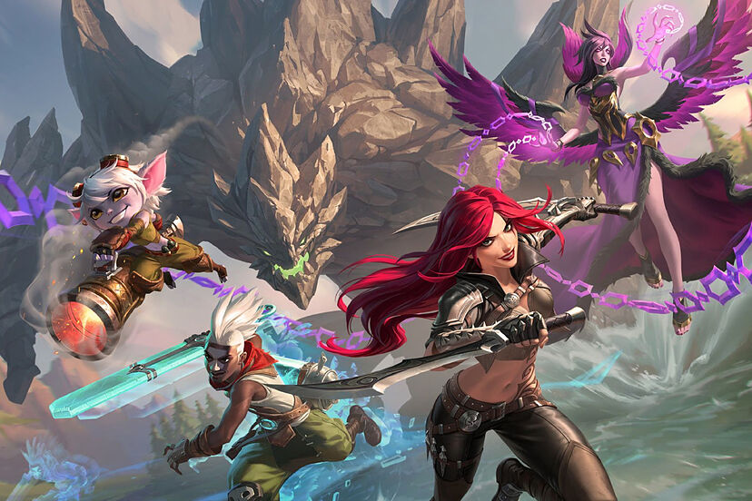

Historia Resumen
League of Legends es uno de los juegos más populares de la historia y fue el que dio origen a las populares competiciones de deportes electrónicos. La historia de League of Legends comienza en 2009 de la mano de RIOT Games, cuando lanzó el juego para PC. LoL, siglas de League of Legends es un juego del género MOBA en el que la velocidad y las estrategias alcanzan ritmos frenéticos donde las decisiones se toman en cuestión de segundos.
League of Legends, en 2021 es el segundo juego más jugado en todo el mundo, por detrás de Fortnite, con un total de 8 millones de jugadores diarios en su plataforma. Esta fanbase es la que ha hecho que los Worlds de League of Legend sea el evento de esports más conocido en el mundo y, por ende, el evento con mayor repercusión de los deportes electrónicos.
